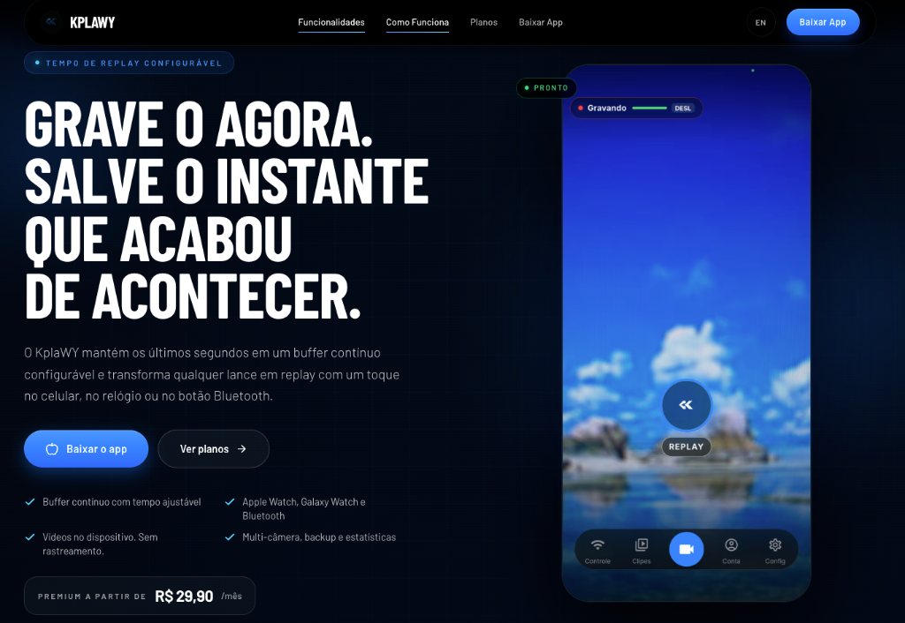

KplaWY
Instant replay for moments that already happened. Replay instantâneo para momentos que já aconteceram.

KplaWY is a mobile instant-replay product built around a circular video buffer. It is designed to let users recover the seconds before an important moment, using the phone or a smartwatch, without depending on an internet connection. O KplaWY é um produto de replay instantâneo móvel estruturado em torno de um buffer de vídeo circular. Ele foi projetado para permitir que os usuários recuperem os segundos anteriores a um momento importante, usando o celular ou um smartwatch, sem depender de conexão com a internet.
Circular video buffer Buffer de vídeo circular
Captures recent moments instead of starting after the action. Captura momentos recentes em vez de iniciar após a ação.
Apple Watch + Wear OS Apple Watch + Wear OS
Remote replay trigger designed for use in motion. Disparador de replay remoto projetado para uso em movimento.
Offline + private Offline + privado
Local operation and privacy by default. Operação local e privacidade por padrão.